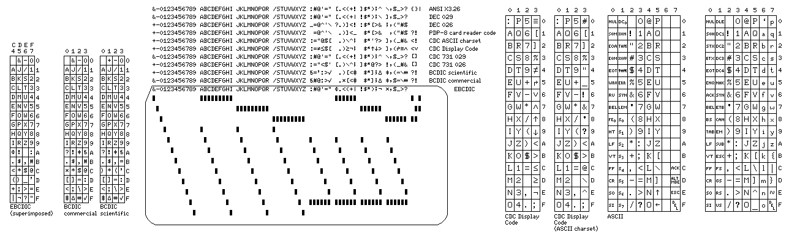
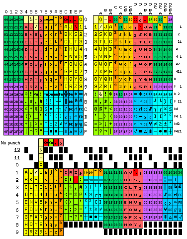
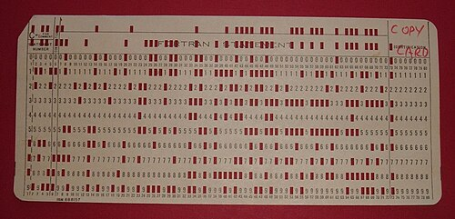
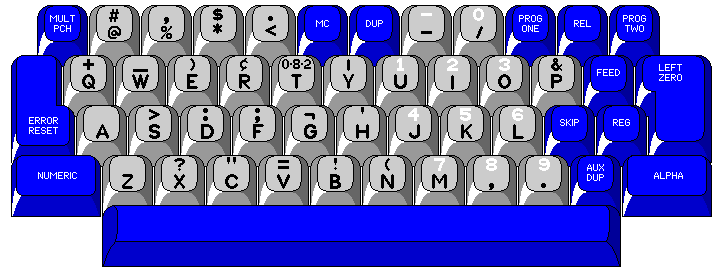
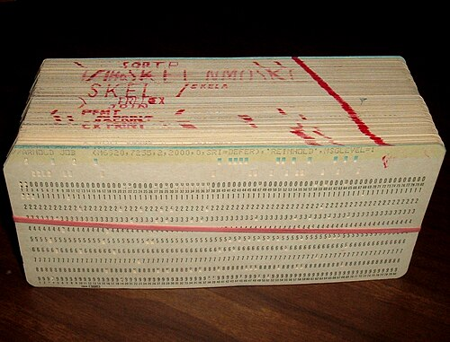
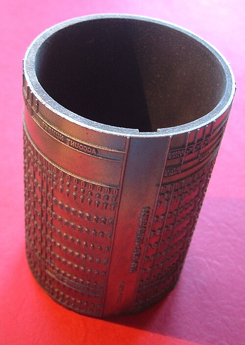
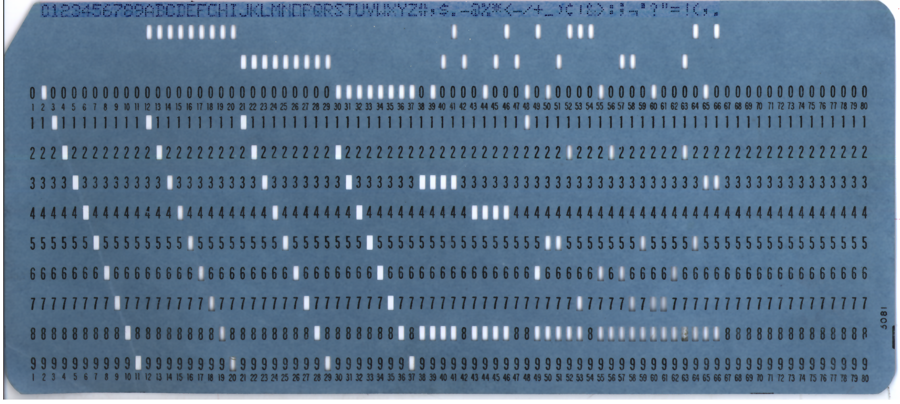
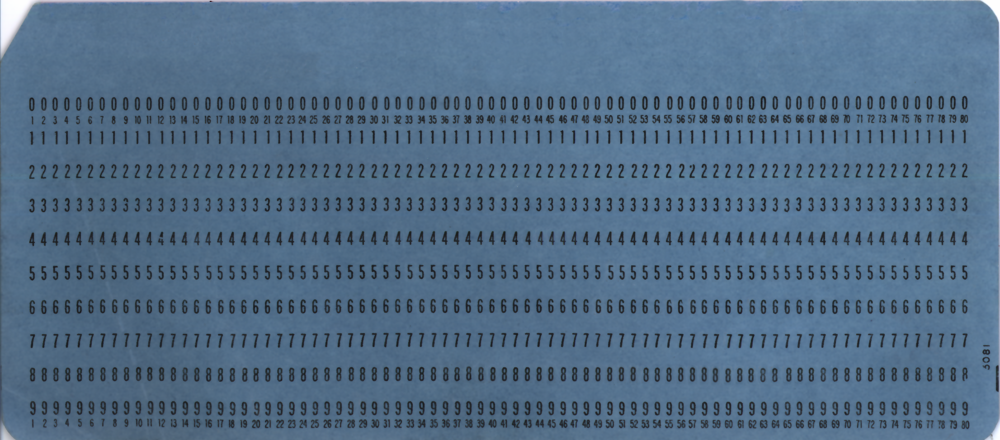

Reviving the IBM Punch Card
I've always been fascinated with "retro" technology and the early computing/ internet era. I recently wanted to make some digital art for my art page, and I went online to surf the internet to find ways to implement it. I built a tool for myself (runs fully in browser) which can emulate writing into a digital punch card. I used it to create some digital mixed media art for my page. I decided to document this journey and share the resources here.







A collection of some pretty images I found while reading articles online.
The surfing and the development process introduced me to a lot of beautiful visuals and resources. I have compiled the relics into a small trove.
In order to create this tool, I took a scan of a punch card from wikipedia and I edited it by myself to fill up all the gaps to use it as a base for the code.
A huge credit to Michael Hamilton's blog post (linked below) from 2012, I based off my implementation from his interactive JS code.
My implementation involved firstly spending a lot of time editing the original image to restore all the punched numbers, and getting the 960 desired points by using a local script which plotted a grid anchored off of two rows of punches in the original image (achieved via a local script).
The stored coordinates are then used to "punch holes" into the empty punch card.
The specific variant I have used for this project is the "IBM Card" which was around 7x3 inches with 80 columns and 12 rows. That's why we can fit upto 80 characters in the above viz.
If you have created some cool art using the punch card above,
share it with me directly or open a issue on github so that I can add it to the upcoming showcase page!
I have huge respect and a feeling of awe when it comes to the technological feats and the people who have worked hard to achieve them. Their hard work has brought us here, and we are standing on the shoulder of giants, it's very easy for us now to take things for granted.
A single photo (~4MB) taken from modern phones would take around 33,000 punch cards to store. And reading/ writing them is a challenge of it's own.

The original image sourced from Wikipedia

Manual fixes done by me
Credits
Huge credit to the blogpost codeincluded for their implementation and writeup -> helped me a lot in building this!
References
- Punched Card wiki — Wikipedia
- IBM history — punch cards
- punchedcardreader - GitHub
- punchcardarchive - over 7000 cards archived!
- original code in the blogpost - Code Included
- Related Hackaday project — Punch Cards and Optical Reading
- Reading punch cards — Craft of Coding
- gen5 decoding guide
- punch card typography — masswerk
- quadibloc — a lot of historical info
- an amazing Computerphile video!
- Center for Computing History YouTube video